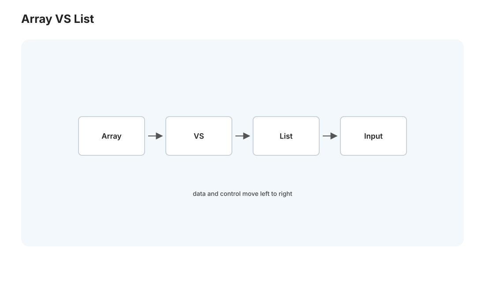
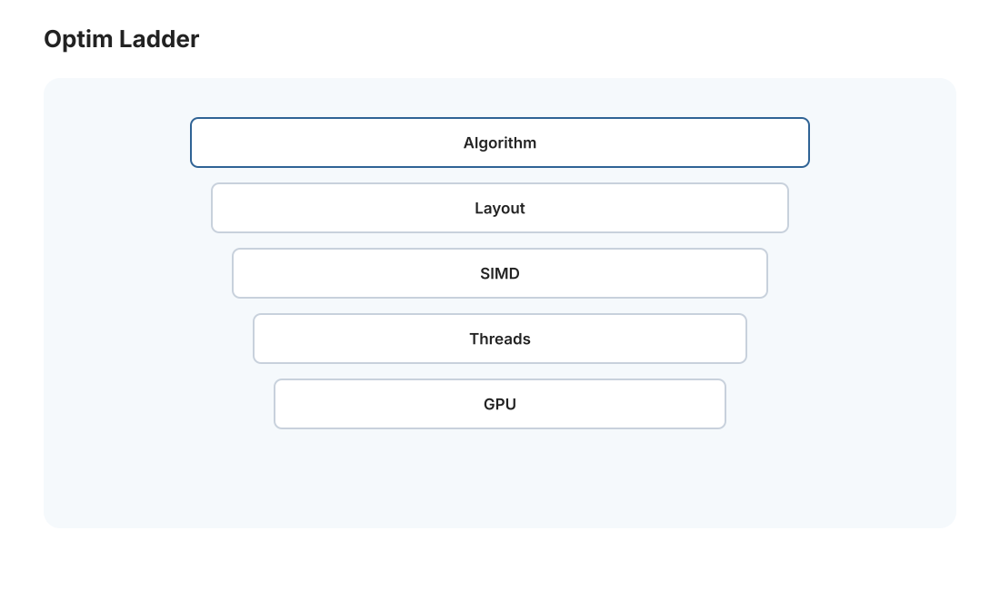

本页目录
性能 II · 缓存优化实战
对标：MIT 6.172 / What Every Programmer Should Know About Memory（Drepper）｜ 前置：csapp-02（缓存原理）、perf-01（测量、Roofline） perf-01 建立了性能的科学方法，这一页把最大的性能杠杆——缓存——从理论（csapp-02）变成一套可操作的优化手法，并收束到 [大 Project P06] "把一个基线程序优化 100×"的终极挑战。核心信念不变：现代程序的性能主要由内存访问模式决定，谁能把数据喂进缓存，谁就赢。
1. 缓存优化的四把手术刀
把 csapp-02 的原理落成四类可执行的手法：
① 改善空间局部性——让访问连续 - 顺序遍历而非跳跃；行优先遍历行存数组（不是列优先）。 - AoS → SoA（perf-01）：只用某几个字段时，把它们连续存。 - 打包数据：去掉不必要的填充、用更小的类型——塞进更少缓存行 = 更少 miss。
② 改善时间局部性——趁热复用 - 循环融合：两个都遍历同一数组的循环合并成一个——数据只加载一次、趁在缓存里做完所有事。 - 分块（tiling/blocking）：把大数据切成能装进缓存的块、块内充分复用再换块——矩阵乘、卷积、转置的核心手法（L01 已实测）。
③ 减少缓存未命中的总量 - 更紧凑的数据结构（数组 > 链表——链表每个节点一次 miss、指针跳来跳去缓存杀手）。 - 热/冷数据分离：常访问的字段和罕用的字段分开存，别让冷数据挤占缓存行。
④ 避免多线程的缓存灾难 - 伪共享（csapp-02）：不同线程写同一缓存行 → 缓存行乒乓。用填充/对齐让线程私有数据独占缓存行（🔗 par 线)。
读法：这四把刀覆盖了 90% 的实用缓存优化。遇到性能问题先问："数据访问连续吗？复用充分吗？结构紧凑吗？线程在抢缓存行吗？"
2. 数据结构的缓存代价：一个反直觉的真相

算法课教你链表插入 O(1)、数组插入 O(n)——但在真实硬件上，遍历一个数组常常比遍历等长链表快一个数量级，因为： - 数组连续 → 硬件预取 + 每次 miss 拉一整行（16 个元素）→ 几乎无 miss。 - 链表节点散落 → 每个节点一次 cache miss + 无法预取（不知道下个节点地址）。
推论："渐进复杂度相同（甚至更差）的数据结构，因为缓存行为可能快很多"——std::vector 常胜 std::list、扁平数组常胜指针树。现代高性能数据结构（B+ 树的高扇出 db-01、列存 db-02、ECS 游戏架构）本质都是为缓存重新设计的数据结构。这是算法理论与硬件现实的一个重要缝隙，性能工程师必须跨过它。
3. 编译器、内存与你的分工
优化里要清楚"谁该做什么"：
- 编译器擅长：局部优化、自动向量化（perf-01）、内联、寄存器分配（comp-03）——别手动做这些，反而妨碍它。
- 编译器不擅长：跨越大范围的数据布局重构、算法替换、分块——这些是你的活，因为它们需要理解程序的语义和访问模式，编译器看不到全局。
- 帮编译器：用 restrict/避免别名让它敢优化、写简单的循环让它能向量化、-O2/-O3 别忘开。
方法论闭环（perf-01 的科学方法在此实操）：perf 找热点 → 看是否 cache miss 高（perf stat 的 cache-misses）→ 判断内存还是算力受限（Roofline）→ 应用对应手术刀 → 再测量确认。每一步都有数字，不靠感觉。
4. 超越单机：性能优化的完整层级

优化是有层级的，从高到低收益递减、代价递增——按顺序来： 1. 算法/数据结构（O(n²)→O(n log n)，收益最大，先做）。 2. 数据布局与缓存（本页，常见 2~10×）。 3. 向量化与指令级并行（perf-01，2~16×）。 4. 多核并行（par 线，~核数倍）。 5. GPU/加速器（gpu 线，特定负载 10~100×）。 6. 分布式（跨机器，dist 线，用于超大规模）。
先爬对楼层：一个 O(n²) 算法再怎么向量化也输给 O(n log n)——Amdahl 和这个层级表一起，构成"该优化什么、按什么顺序"的完整决策框架。这是把全站性能相关知识（算法/缓存/SIMD/并行/GPU/分布式）串成一条优化路线的总纲。
5. 练习与要点
例 1（数组 vs 链表实测） 遍历求和一个 1000 万元素的数组 vs 等长链表——数组快近十倍，用 perf stat 看 cache-misses 差异。"渐进复杂度不是全部"一次刻进去。
例 2（循环融合） 两个分别对数组做 scale 和 shift 的循环，融合成一个——测量加速（数据只过一遍缓存）。小重构、真收益。
例 3（爬对楼层） 给一个"用 O(n²) 算法 + 未向量化"的慢程序，判断先做什么（换算法，别急着向量化 O(n²)）——练"优化顺序"的判断力，这比任何单一技巧都值钱。\(\blacksquare\)
📋 大 Project P06 · 性能工程终极题（优化 100×）
教师版作业说明书，不提供完整解。 P06 的重点不是炫技，而是训练“测量 → 假设 → 修改 → 复测”的工程循环。
- 学习目标：把算法复杂度、缓存局部性、SIMD、多线程、Roofline 分析串成一个完整优化案例。
- 教师提供：三选一基线程序（N 体模拟 / 图像卷积 / 稀疏矩阵运算）、固定输入集、正确性校验器、benchmark harness、计时脚本、报告模板。
- 学生任务：① 建立 baseline，记录 wall time、cache miss、IPC、Roofline 位置；② 算法或数据结构替换；③ 数据布局与缓存优化；④ SIMD 或自动向量化辅助；⑤ 多线程并行；⑥ 可选 GPU/Metal/CUDA 版本。
- 约束：每次提交只能包含一个主要优化点；不得牺牲数值正确性；所有 benchmark 要固定机器、编译器、输入规模并重复取中位数；报告必须保留失败尝试。
- 验收测试：输出误差在给定阈值内；相对 baseline 达到分档加速（及格 20×，良好 50×，优秀 100×）；每一步都有 before/after 数字和解释；隐藏输入上没有退化。
- 评分重点：测量纪律 25%，优化有效性 35%，正确性与泛化 20%，报告质量 20%。
- 延伸挑战：用同一 workload 画出单线程优化、多线程优化和 GPU 优化的 Roofline 迁移图，解释瓶颈如何变化。
下一页：并行 I——并行模型与缓存一致性：从单核榨性能到用多核，共享内存并行的原理与陷阱。